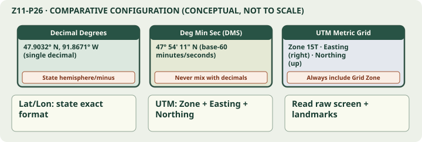

Z11-P26 · Navigation, weather and rescue · New manuscript
Read latitude/longitude and UTM grid coordinates without format errors
Read and transmit exact map or GPS coordinates unambiguously so responders plot your true location.
When it applies · Reading USGS map grids, configuring GPS apps and calling 911 or SAR dispatch.
Equipment · Topographic map with coordinate ticks, GPS/phone display and written format reference.

Actions
- Recognize the three common latitude/longitude formats—Decimal Degrees (DD.DDDD°), Degrees Decimal Minutes (DD° MM.MMM′) and Degrees Minutes Seconds (DD° MM′ SS″)—and NEVER mix formats or drop minus/hemisphere signs (North/West in the U.S.).[N01, T06]
- Recognize UTM (Universal Transverse Mercator) metric grid coordinates used on USGS maps and SAR operations: always include the Grid Zone (e.g., 15T in northern Minnesota), Easting (read right) and Northing (read up).[N01, N02]
- Read every coordinate aloud exactly as displayed on your device or map margin, explicitly stating the format and hemisphere/zone to the dispatcher.[T06, N01, ED]
Failure recognition · Reading Degrees-Minutes-Seconds digits as Decimal Degrees to a 911 dispatcher, placing your rescue pin miles away from your actual camp.[T06, N01]
Verify · Confirm your GPS app, paper map grid and written location note display the exact same coordinate format and hemisphere/zone.[N01, T06, ED]
Stop or change course · When uncertain of coordinate format, give verified plain-language landmarks (park, trailhead, nearest junction, lake name) alongside the raw unedited screen text.[T06, N09]
Evidence and editorial notes
- N01 · USGS · US Topo Maps for America (current web edition)
- Section: US Topo Maps > Coordinate Grids, Scale and Currency · Conditions: Map reading and trip planning in the United States
Support: USGS topographic maps provide elevation contours, hydrography, roads, land cover and scale/date metadata; check publication date because trails, roads and structures change over time.
Limitations: Historical topo sheets (such as 1965 Ely quadrangle) illustrate symbols only and never establish current routes or declination. · Conflicting evidence: None; aligns with USGS-MAP-R and NOAA-D.
Editorial note: Grounds map margin, scale, date and historical-excerpt limits in Z11. · Specialist reviewer: Cartography and navigation
Primary source · checked 2026-11-24 - N02 · USGS · Topographic Map Symbols (agency PDF)
- Section: Topographic Map Symbols > Contours, Water, Vegetation and Boundaries · Conditions: Interpreting standard USGS 1:24,000 and US Topo map sheets
Support: Contour spacing indicates slope steepness, index contours give elevation values, blue features mark water/wetlands and standard symbols distinguish roads, trails, cliffs and marshes.
Limitations: Small terrain hazards (boulders, undercut banks, fallen timber, thin ice) fall below map contour interval resolution. · Conflicting evidence: None; anchors terrain and contour interpretation cards.
Editorial note: Explains contour reading alongside map-resolution limitations. · Specialist reviewer: Cartography and search and rescue
Primary source · checked 2026-11-24 - N09 · NPS · Outdoor Emergency Plan (current web edition)
- Section: If You Get Lost; Seek help · Conditions: Lost hiker who cannot safely retrace steps and has sought rescue
Support: Report last known location and landmarks. Stay put while awaiting help unless an immediate threat requires getting to safety.
Limitations: Navigation, signaling method and safe movement depend on site and responder instructions. · Conflicting evidence: See A02 claim audit for boundaries.
Editorial note: Core evidence for lost-person psychology, signaling and SAR coordination cards. · Specialist reviewer: Search and rescue
Primary source · checked 2026-11-24 - T06 · NPS · Outdoor Emergency Plan (current web edition)
- Section: If you get lost or hurt; call for help · Conditions: Outdoor US emergency
Support: Communicate location, last known point, situation and needs. Stay put when unable to establish a safe route unless immediate danger requires movement.
Limitations: Cell signal is unreliable in backcountry terrain; pre-trip plans bridge communication gaps. · Conflicting evidence: None; core lost-person decision rule.
Editorial note: Foundation for stay/signal/move and dispatch handoff cards. · Specialist reviewer: Search and rescue
Primary source · checked 2026-11-24
Source lineage · USGS US Topo and NPS emergency plan; new manuscript · Classification · New manuscript.